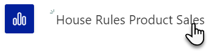

- Review the workspace in the left-menu, you have one dataset, one report and one
dashboard which was created when you added the dataset, hover your mouse over the dashboard and click on the ellipsis (…) then select Settings

- Change the Dashboard name to Product Sales
Summary and click Save
- Next click on your report

- To pin a visual to your dashboard, hover your mouse over any visualisation and click on the Pin visual
 (you can use the Pages pane to switch pages)
(you can use the Pages pane to switch pages)